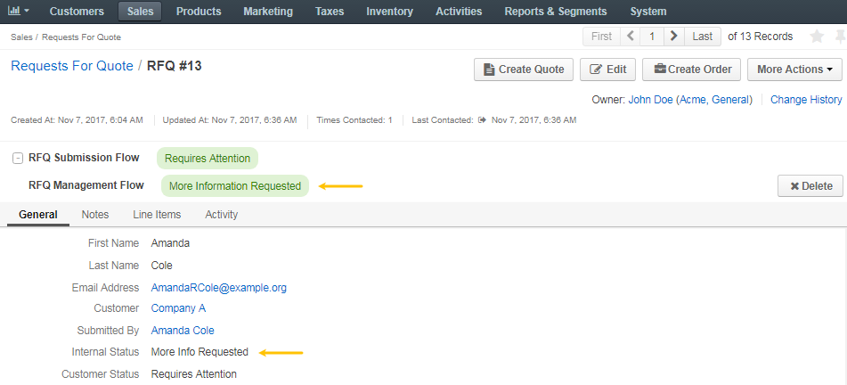
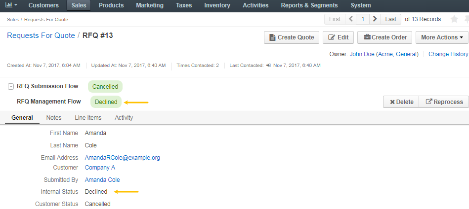
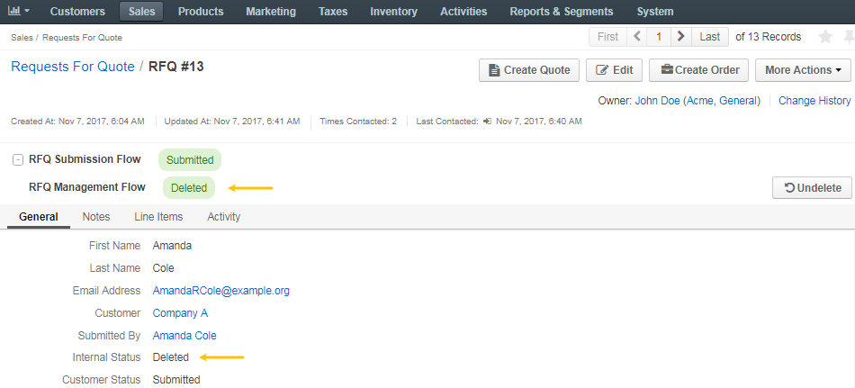

Use RFQ Transitions¶
Note
The workflow transitions are available for customers and sales representatives when RFQ Submission Flow and RFQ Management Flow workflows are activated in the system configuration.
To control RFQ using transitions exposed by RFQ workflows (RFQ Submission Flow and RFQ Management Flow):
- Navigate to Sales > Request for Quotes in the main menu.
- Find the required RFQ and click on it to open RFQ details.
Now you can perform the following actions with an RFQ in the management console:
Once the RFQ is submitted by a customer in the front store, it becomes immediately available in the RFQ management console in the Open status.


Mark the RFQ as Processed¶
To mark the RFQ as processed, click Mark as Processed on the RFQ page. This will notify the assigned sales representative that the quote is being processed.
Marking RFQ as processed will change its internal status to Processed.

Request More Information from the Customer¶
To request more information from a customer:
Click Request More Information to open a text dialog for you to communicate with the customer.
Enter a comment.
Click Submit.

The customer will be notified by email and through the customer’s store account that more information is required.
The internal status should then change to More Information Requested, and the customer status should change to Requires Attention.
Once the customer responds to the request for additional information, the assigned sales representative is notified that the customer has provided the requested information and can continue processing the request.
The internal status changes back to Open, and the customer status changes back to Submitted.
Decline the RFQ¶
To decline the RFQ, click Decline on the RFQ page.
This will change the internal status to Declined, and the customer status to Cancelled.
Delete the RFQ¶
To delete the RFQ from the list, click Delete on the RFQ page.
The RFQ will be removed from the customer user’s account.
The internal status will be changed to Deleted.
